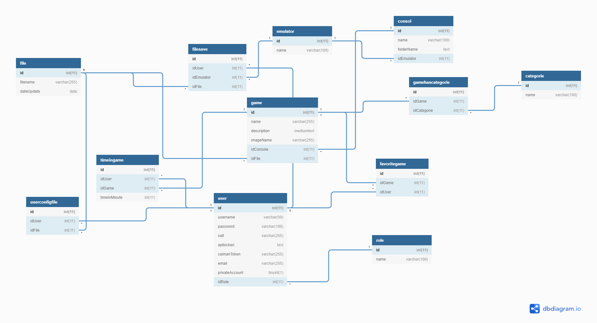

Analyse fonctionnelle¶
Base de données¶
Schéma¶
Le schéma suivant représente la structure de la base de données. La base de données est commune au site web et à l’application Caiman. Les tables sont principalement utilisées pour stocker les informations des utilisateurs et des différents jeux.

Table categorie¶
Cette table est utilisée pour stocker les différentes catégories auxquelles les jeux peuvent appartenir.
Table console¶
Cette table sert à stocker les différentes consoles prises en charge par l’application Caiman. Chaque console doit être reliée à un émulateur.
Table emulator¶
La table émulateur sert à lister les différents émulateurs disponible pour l’application, il est possible qu” un émulateur soit compatible avec plusieurs consoles.
Table favoritegame¶
Sert à lister les jeux favoris des utilisateurs.
Table file¶
La table file sert à lister le nom d’un fichier, cela peut être un fichier .iso d’un jeu, un fichier de sauvegarde ou un fichier de configuration utilisateur.
Table filesave¶
Sert faire le lien entre un émulateur, un utilisateur, et un fichier de sauvegarde. Alors elle permet de connaître les sauvegardes pour un émulateur particulier d’un utilisateur.
Table game¶
Table qui liste les jeux disponibles. Chaque jeu a plusieurs informations: un nom, une description, une console. La console permet de à l’application de savoir quel émulateur doit être utilisé.
Table gamehascategorie¶
Sert à assigner des catégories aux jeux.
Table rôle¶
Sert à lister les différents rôles (utilisateur, administrateur), elle ne sert que pour le site web sachant que toute la partie administration est sur le site.
Table timeingame¶
Sert à stocker le temps de jeu en minutes de chaque utilisateur. Le temps de jeu est spécifique à chaque jeu. Il est mis à jour directement depuis l’application Caiman.
Table user¶
Cette table sert à stocker les informations de compte de chaque utilisateur de Caiman. Le compte est commun au site web et à l’application. Le mot de passe de l’utilisateur est crypté avec les fonctions de sécurité de php.
Table userconfigfile¶
Cette table sert à faire le lien entre un fichier de configuration et un utilisateur. Le fichier de configuration sert à connaître la configuration.